$ ls
Dockerfile README.adoc dist gulp scripts
Makefile assets docker-compose.yml package.json slidesIntroduction au Réseau
Institut Saint Laurent - 2018
Présentation disponible à l’URL https://dduportal.github.io/isl-reseau-2018/v1.0
Comment utiliser cette présentation ?
Pour naviguer, utilisez les flèches en bas à droite (ou celles de votre clavier)
Gauche/Droite: changer de chapitre
Haut/Bas: naviguer dans un chapitre
Pour avoir une vue globale : utiliser la touche "o" (pour "Overview")
Pour voir les notes de l’auteur : utilisez la touche "s" (pour "Speaker notes")
Whoami
Damien DUPORTAL:
Træfik's Developer Advocate @ Containous et Freelancer
Former Training Engineer @ CloudBees
Introduction au Binaire
Il y a 10 types de personnes :
Ceux qui comprennent le binaire,
Les autres.
Système Décimal
Concept: un chiffre prends une des valeurs suivantes:
0
1
2
..
9
Combien de valeurs ? 10
Décimal : "Base 10"
| 1 chiffre | 2 chiffres | 3 chiffres |
|---|---|---|
0 | 10 | 100 |
1 | 11 | 101 |
2 | 12 | 102 |
etc. |
Système Binaire
Utilisé en Chine 1 siècle avant J.C.
Concept: Un chiffre ne peut prendre que 2 valeurs: 0 ou 1
Décimal : "Base 2"
| 1 chiffre | 2 digits | 3 digits |
|---|---|---|
0 | 10 | 100 |
1 | 11 | 101 |
- | 11 | 110 |
- | - | 111 |
etc. |
Décomposition en Puissances
Décimal :
125 = 100 + 20 + 5 = ( 1 x 102 ) + ( 2 x 101 ) + ( 5 x 100 )
Binaire :
111 = 100 + 10 + 1 = ( 1 x 22 ) + ( 1 x 21 ) + ( 1 x 20 )
Octet / Bits / Digit ?
Digit : C’est un chiffre, quelque soit la base (10, 2, 16, etc.)
Bit : C’est un chiffre en base 2
Octet : Codage d’une information sur 8 bits
Octet
Unité du Système International
Incluant des unité de grandeur: kilo (Ko), mega (Mo), giga, téra, péta, exa, zetta, yotta…
Attention: grandeur par 1000
Unité "binaire" (multiples faciles)
Unité de grandeur alternative: kibi (Kio), mébi (Mio)…
Attention: grandeur par 1024
Système Hexadécimal
Base 16: 0, 1,… 9, A, B, .. F
Compromis simplicité / écriture compacte
Pratique en informatique: codé sur 4 bits
Exercices
Couleurs en CSS : Combien de couleurs possibles,
avec le format
#aaaaaa(6 caractères hexadécimaux) ?avec le formt RVB(255,255,255) (3 octets) ?
Conclusion ?
Introduction à la Ligne de commande Linux
Linux

Conventions
Le charactère "dollar"
$en début de ligne indique une invitation de commandeSon absence indique le résultat de la commande executée dans l’invitation
Commande
C’est le « verbe » expirmant l’intention de la commande
Example:
lspour "Lister" le contenu d’un répertoire :
Arguments
C’est le "compléments d’objet" permettant de désigner la cible de l’intention
Example: "Lister" le contenu du répertoire
/usr:
$ ls /usr
bin include lib libexec local sbin share standaloneOptions
Ce sont des « adverbes » pour nuancer l’intention
Example: Lister le contenu du répertoire courant, en affichant 1 élément par ligne avec les détails:
$ ls -l
total 40
-rw-r--r--@ 1 dadou staff 564 Oct 15 15:16 Dockerfile
-rw-r--r--@ 1 dadou staff 1320 Oct 15 15:12 Makefile
-rw-r--r--@ 1 dadou staff 1567 Oct 15 15:12 README.adoc
drwxr-xr-x@ 4 dadou staff 128 Oct 15 15:05 assets
drwxr-xr-x 8 dadou staff 256 Nov 5 13:25 dist
-rw-r--r--@ 1 dadou staff 661 Oct 15 15:12 docker-compose.yml
drwxr-xr-x@ 4 dadou staff 128 Oct 15 15:05 gulp
-rw-r--r--@ 1 dadou staff 778 Oct 15 15:11 package.json
drwxr-xr-x@ 3 dadou staff 96 Oct 15 15:05 scripts
drwxr-xr-x@ 6 dadou staff 192 Nov 4 12:00 slidesKit de survie
Supercommandes: CTRL + * :
Ctrl+C: Interrompre la commande en cours
Ctrl+A / Ctrl+E: Naviguer au début / à la fin de la ligne en cours
Ctrl+D: Equivalent des commandes
exitoulogoutCtrl+R: Rechercher dans l’historique des commandes
man CMDpour le "manuel" d’une commande. Example:man ls.Si les "manuels" ne sont pas installés : Google !
Système de fichier
Arbre :
Racine (
/)Branches (dossiers)
feuilles (fichiers)
Parcours du système de fichier
"/" comme racine, et aussi "/" comme separateur
Exemples :
/: "racine" du disque/usr: Dossierusrà la racine du disque/home/scrapbook: Sous-dossierscrapbookdans le dossierhomeà la racine
Quelques commandes utiles
Changer de répertoire courant:
cdAfficher le répertoire courant:
pwdCréer un fichier:
touchCréer un répertoire:
mkdirCopier un fichier ou répertoire:
cpDéplacer un fichier ou répertoire:
mvSupprimer un fichier ou répertoire:
rm
Utilisateurs
obligatoire; rien d’anonyme !
Superutilisateur
root
Groupe
Annuaire d’Utilisateurs
Liste dans /etc/passwd Groupes dans /etc/group
Utilisateurs et système de fichiers
Droits sur les fichiers : owner, group, others.
Codage des droits sur le système de fichiers
Binaire
Decimal
Codé
Exercices droits sur le système de fichiers
Ls -l en exemple
chmod et chgrp
Résumé des commandes
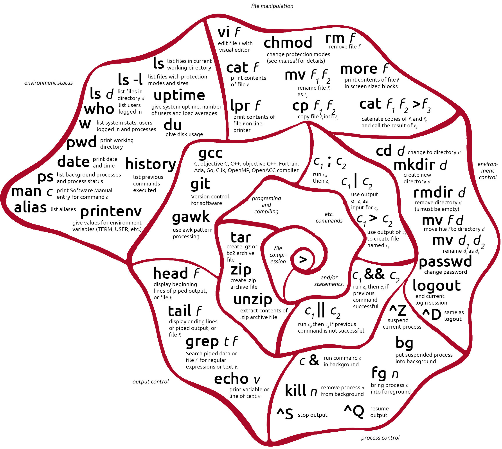
Introduction au Réseau
Quel est le problème ?
On souhaite transmettre de l’information entre 2 acteurs éloignés.
Solution simple : Les Sémaphores
Limites des Sémaphores
Information trop simple: allumé ou éteint
Logistique nécessaire:
Il faut se mettre d’accord au préalable
Fragilité du "réseau"
Quid de la confidentialité ?
Meilleure solution: Signaux de fumée

source: http://www.leplacide.com
Signaux de fumée: principes
Encodage de l’information dans un dictionnaire
On doit partager ce dictionnaire
Possibilité de chiffrer les messages
Meilleure quantité d’information portée
Limites des signaux de fumée

source: Lucky Luke: Les Collines Noires
Meilleure solution : Le Courrier
Plus grande quantité d’information
Meilleure confidentialité
Meilleur routage
Limites du courrier
Routage
Un peu d’histoire…
Télégraphe Optique
"Super Sémaphore"
Télégraphe Electrique
26 Lettres: 26 fils ?
Problématiques du Réseau
Routage de l’information
Quantité d’information à transmettre
Intégrité de l’information
Protocole d’échange
Problématiques: Routage
Source
Destination
Chemin
Problématiques: Quantité
Découper
Compresser
Problématiques: Intégrité
Diluer
Dupliquer
Chiffrer
Problématiques: Protocoles
Quel language ?
Quel propriétées ?
Quand commencer, et finir ?
Modèle OSI
Il en tient un couche ce modèle !
Descartes ?

Descartes
Découper un gros problème en sous-problèmes
"Esprit Cartésien"
Faire une seule chose, mais bien la faire
Le modèle "OSI"
OSI = "Open Systems Interconnection"
Modèle standard International (ISO-7498)
Modèle initial sur fond de combats industriels dans les années 1970s
Concepts:
Chaque couche forme une abstraction des couches inférieures
Entre 2 hôtes, dialogue couche à couche
OSI Facile
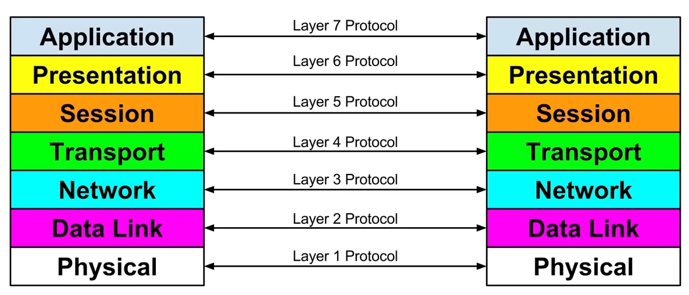

OSI: Commutation de paquets
But: Transfert d’information dans des paquets

Packet Data Unit (PDU)

Modèle "Internet Protocol" (TCP-IP)
Problèmatiques du modèle OSI
Modèle poussé par des industriels
Intérêts
Pérennité
Très complet, mais trop complexe
Bienvenue au modèle "Internet Protocol"
Inventé par Vinton G. Cerf et Bob Kahn
Issu de la recherche universitaire, puis militaire
Utilisé sur ARPANet en 1983
Simplifions OSI !
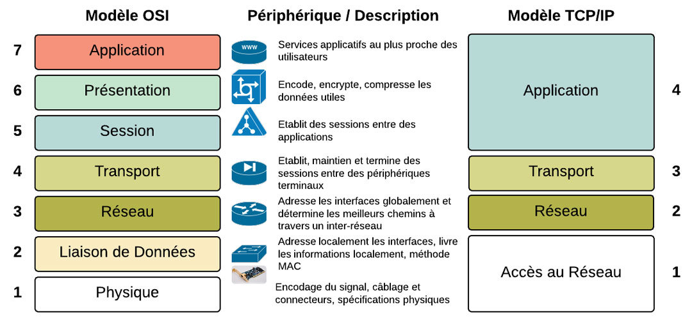
TCP/IP : les 4 couches
Couche Applicative:
Communications de haut niveau
Couche Transport:
Garantie des niveaux de service
Couche Réseau:
Gestion des adresses
Couche "Liaison de données":
Gestion de la voie physique
TCP/IP : Communication point à point

TCP/IP : Commutation de paquet
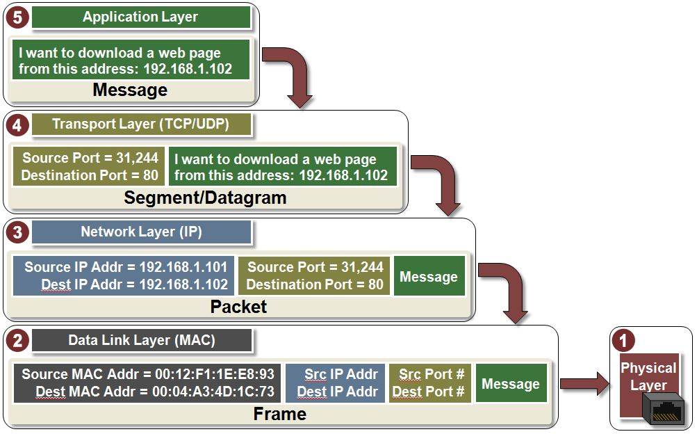
Couche "Liaison de Données"
Modèle "Internet Protocol"
Où sommes nous ?
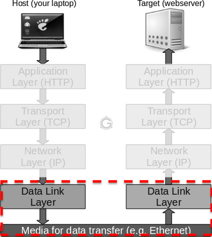
Buts de la couche "Liaison de Données"
Contrôler la transmission de la donnée via la couche physique
Par abus de language: on intègre la couche physique ici
Donc liaison physique + carte associée + pilotes logiciels
Exemples
Ethernet
Wifi
Bluetooth
Cable Coaxial
Fibre Optique
NFC
Topologie
Branche des mathématiques qui étudie la géométrie de situation, les propriétés de l’espace.
Type de Topologies
Topologies Physiques : Palpables
Topologies Logiques : Virtuelles
Topologie Linéaire

Topologie Linéaire
La plus simple
Très fragile
Temps de parcours dépendant de la distance
Ajout facile
suppression avec coupure
Topologie en Anneau
Topologie en Anneau
Modèle du "paquet de chips autour du feu de camp"
Moins fragile: Duplication des chemins
Temps de parcours dépendant de la distance
Ajout moyennement couteux
suppression moyennement couteuse
Topologie en Etoile

Topologie en Etoile
Modèle du "chef scout au feu de camp".
Fragilité limité à la coupure, pas d’impact sur le reste.
Mais Centralisation
Temps de parcours constant
Ajout facile
suppression facile
Topologie en Bus

Topologie en Bus
Variation de l’étoile, mais sans élément central
Temps de parcours constant
Ajout et suppression facile
Topologie en Arbre
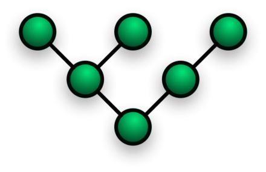
Topologie en Arbre
Interconnexion de topologie en étoiles entre elles
Fragile
Ajout facile, suppression moyennemenet complexe
Parcours constant et facile
Topologie en Maillage
Topologie en Maillage
Temps de parcours constant
Ajout et suppression complexes
Très solide
Topologie Hybride
Internet: "Inter-network" : Interconnexion de réseaux avec différents topologies
Ethernet
Un exemple d’implémentation de
la couche "Liaison de Données + Physique"
"Ether"
Milieu hypothétique des substances subtiles distinctes de la matière et permettant de fournir ou transmettre des effets entre les corps censé baigner l’Univers.
— Scientifique Anonyme, 1789
Ethernet : Kezako ?
Ethernet est :
Une mécanisme de connexion physique, à transmission électrique
Un protocole de réseau local à "commutation de paquets"
Une norme internationale : ISO/IEC 8802-3
Ethernet : Connexion physique à transmission électrique
Ethernet : RJ45

Ethernet : câblage
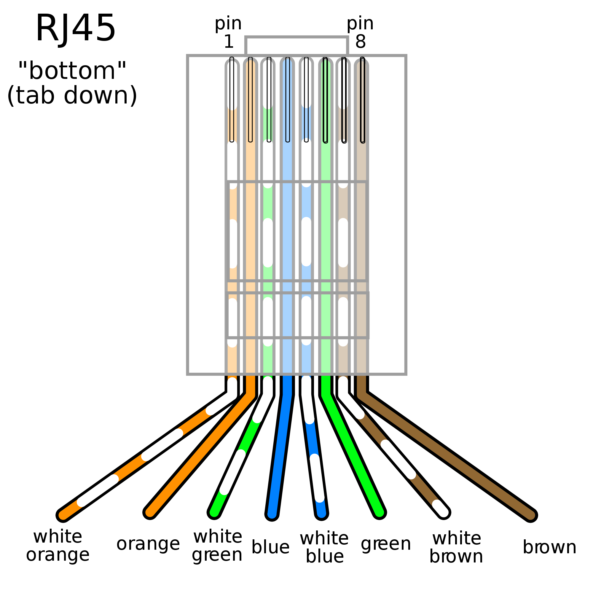
Ethernet : fonctionnement de base
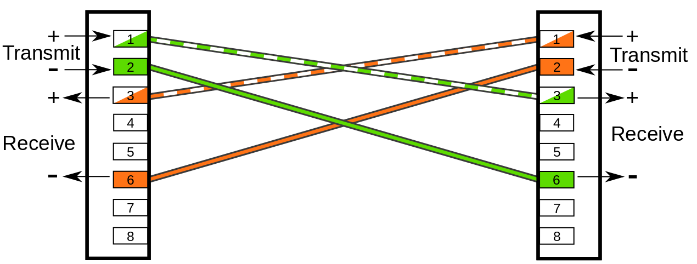
Ethernet : Comment connecter plusieurs équipements ?
Problème : Comment faire dialoguer 3+ ordinateurs via Ethernet ?
Ethernet : Concentrateur
Solution : Concentrateur ("Hub") Ethernet.
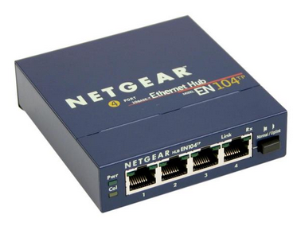
Ethernet : Chaînage de concentrateurs
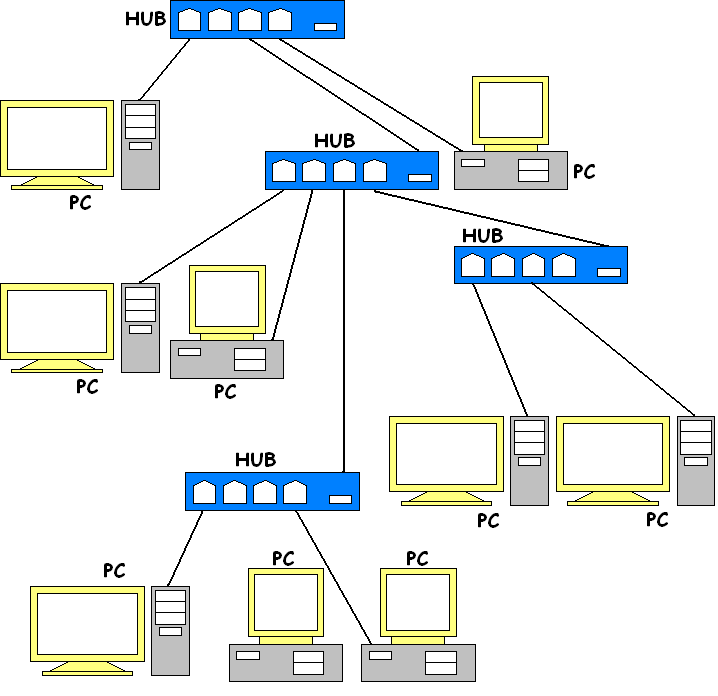
Ethernet: Cinématique avec un concentrateur 1/2
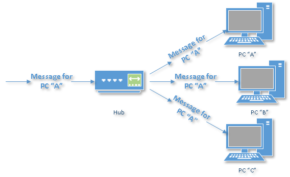
Ethernet: Cinématique avec un concentrateur 2/2
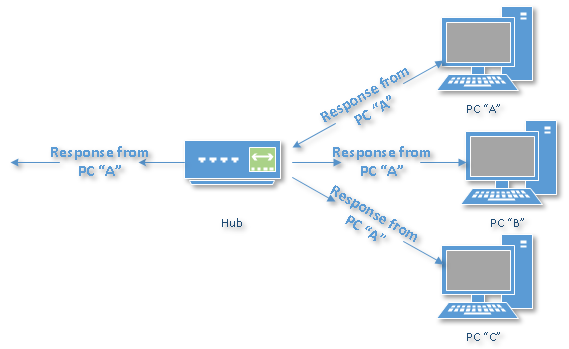
Ethernet + Concentrateur : Protocole "Feu de Camp"
Imaginez une conversation autour d’un feu de camp à 10:
Concept de "collision" : On attends avant de réessayer
Simple mais peu performant. En plus on a des adresses…
Ethernet : Il faut un arbitre
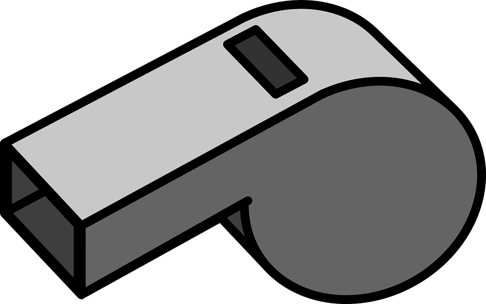
Passage à une topologie "étoile"
On était en topologie "bus"
Ethernet : Commutateur
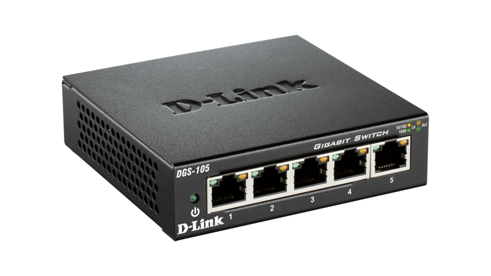
Ethernet + Commutateur : Chef d’orchestre
Ethernet: Cinématique avec un commutateur 1/2
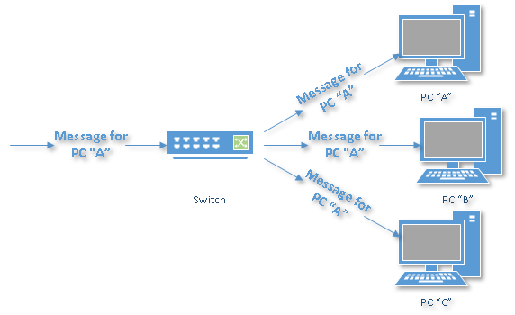
Ethernet: Cinématique avec un commutateur 2/2
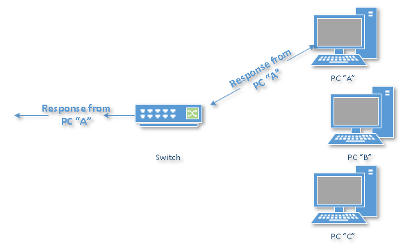
Ethernet : Câbles droits pour Commutateur
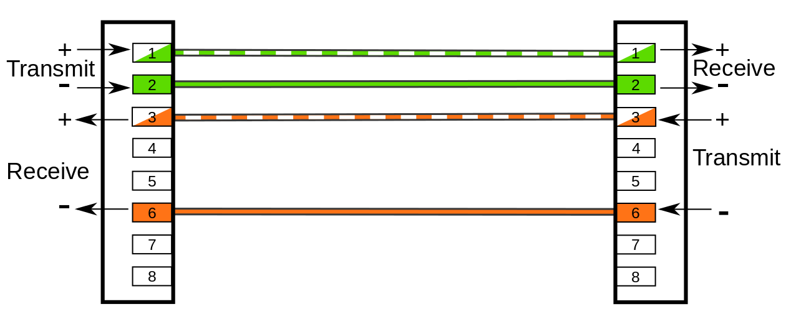
Toutes les cartes Ethernet savent croiser/décroiser en 2018
Ethernet : Comment localiser l’interlocuteur ?
Solution : Adressage
Adresse MAC
M.A.C. : "Media Access Control" (rien à voir avec une pomme)
Adresse dites "physique" car déclarée dans le matériel
Peut être surchargée (Confidentialité sur Wifi publics…)
Structure :
Stockée sur 6 octets
Couramment exprimée en hexadécimal
Exercices Adresses MAC
Pourquoi l’hexadécimal?
Localiser l’adresse MAC de votre machine
Problème: Plusieurs interfaces réseau ?
Localiser l’adresse MAC de l’ethernet sur les Raspberry Pis
Couche "Réseau"
Modèle "Internet Protocol"
Où sommes nous ?
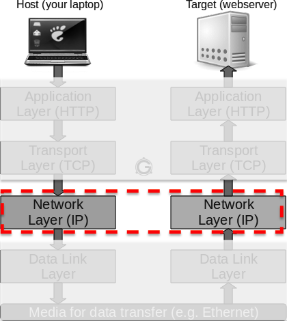
Buts de la couche "Réseau"
Interconnexion des réseaux:
Gestion des adresses
Gestion du routage
Adresse IP
"IP" désigne aussi bien l’adresse que le protocole de communication :
"I.P." == "Internet Protocol"
Adresse logique (virtuelle)
2 normes IPs:
Version 4 : IPv4 (défaut dans ce cours)
Version 6 : IPv6 (raison: épuisement du stock d’adresse IPv4… en théorie)
Adresse IPv4 : Format
Taille de 32 bits (4 octets)
Exprimé avec 4 nombres décimaux séparés par des points
.. Exemples:0.0.0.0
10.0.3.4
192.168.0.1
255.255.255.255
Adresse IPv6 : Format
Taille de 128 bits
Exprimé en suite de nombre hexa-décimaux, séparés par des double point `: `
Exemple : 001:0db8:0000:85a3:0000:0000:ac1f:8001
Adresse IP : Codage
L’adresse IP porte 2 informations:
L’adresse de l’hôte
L’adresse du réseau
Adresse du réseau ?
Wait, what ?
3 adresses (MAC, IP, Réseau) ?
Rappel : Couches = Abstraction
Les modèles en couches (OSI, TCP/IP) définissent des abstractions
On a une couche physique, toutes les autres sont "logiques":
La couche réseau est donc "virtuelle"
L’adresse MAC est une adresse "physique"
⇒ Plus que 2 adresses !
Pourquoi des "réseaux" ?
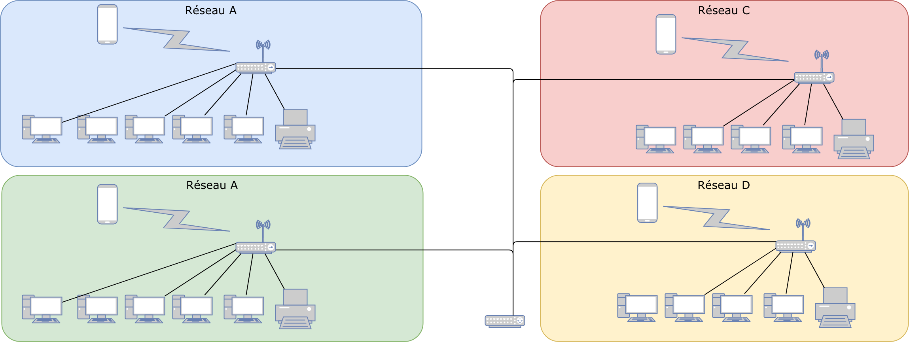
Adresses du Réseau: Abstraction
Simplifions (Rappel: Descartes)
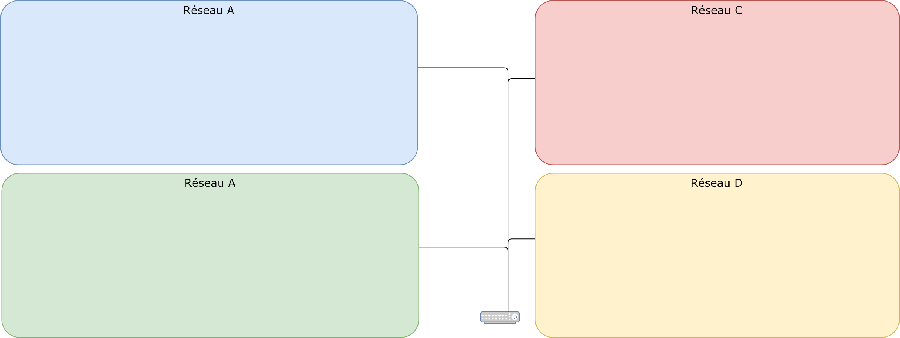
Définition d’un "Réseau"
Groupement logique d’hôtes
Abstraction des hôtes pour le monde extérieur
Réseau Locaux / Globaux
Réseau "local" ("LAN - Local Area Network") :
On parle d’un "segment"
Réseau "global" ("WAN - Wide Area Network) :
Interconnexion de segments
2 adresses en 1
Q: Certes, mais comment l’adresse IP peut-elle embarquer 2 adresses en 1 ?
R: Avec ce qu’on appelle le "masque sous-réseau"
Qui se souvient ?
C’est pareil pour le masque sous réseau
Masque Sous-Réseau
Concept:
On applique un "masque" sur l’adresse IP
Le résultat est l’adresse du réseau
Au lieu du bleu/rouge, on utilise le binaire
Si on n’a pas le même nombre de bits, alors on ajoute des 0
On doit donc avoir le même format que l’adresse IP
Opération "ET logique"
Utilisation de l’opération "ET logique"
Ressemble à la multiplication:
0 ET 0 = 0
1 ET 0 = 0
0 ET 1 = 0
1 ET 1 = 1
Calcul du masque sous-réseau
On aligne les bits entre l’IP et le masque
On effectue les opérations de "ET logique" bit à bit
On récupère le résultat
11000000.10101000.00001010.00010100 => 192.168.10.20 ET 11111111.11111111.11111111.00000000 => 255.255.255.0 = 11000000.10101000.00001010.00000000 => 192.168.10.0
Exercices masque sous-réseau
Quel est le réseau de l’adresse IP
192.168.1.2(masque:255.255.0.0) ?Quel est le réseau de l’adresse IP
10.128.4.10(masque:255.255.240.0) ?Quel est le réseau de l’adresse IP
172.195.4.1(masque:255.240.0.0) ?
Restriction des bits du masque
Est-ce qu’il y a des bandes rouges dans le verre bleu des lunettes ?
Un masque sous-réseau est toujours séparé en deux parties :
Une série de 1 contigus
Puis une série de 0 contigus
Exercice de reconnaissance de masques
Quelles sont les masques sous réseau valides ?
255.255.128.0
255.255.255.192
192.192.0.0
192.192.0.0
255.248.0.0
255.255.255.252
0.0.0.0
Obsolète: Classes d’adresses IP
| Classe | Bits de départ | Début | Fin |
|---|---|---|---|
Classe A | 0 | 0.0.0.0 | 127.255.255.2553 |
Classe B | 10 | 128.0.0.0 | 191.255.255.255 |
Classe C | 110 | 192.0.0.0 | 223.255.255.255 |
(Les classes D et E existaient également pour des adresses réservées)
Adresse IPv4 "Spéciales" 1/2
| Bloc | Usage |
|---|---|
0.0.0.0/8 | Ce réseau |
127.0.0.0/8 | adresse de bouclage (localhost) |
10.0.0.0/8, 172.16.0.0/12, 192.168.0.0/16 | Adresses privées |
… | … |
Adresse IPv4 "Spéciales" 2/2
| Bloc | Usage |
|---|---|
169.254.0.0/16 | adresses locales autoconfigurées |
255.255.255.255/32 | broadcast limité |
100.64.0.0/10 | Espace partagé pour Carrier Grade NAT |
224.0.0.0/4 | Multicast "Multidiffusion" |
… | … |
Notation CIDR
Depuis 1994, on utilise la notation "CIDR" au lieu des classes d’IP
Beaucoup plus modulaire et adaptable
On ajoute un suffixe à l’adresse IP
Séparateur: caractètre slash
/Valeur du suffixe : nombre décimal indiquant le nombre de "1" du masque
Exemple de notation CIDR
255.255.0.0=11111111.11111111.00000000.00000000⇒ 16 zéros
L’adresse IP
192.168.2.1associée au masque255.255.0.0est donc écrite192.168.2.1/16On écrit également son réseau ainsi =
192.168.0.0/16
Exercices CIDR
Donnez la notation CIDR de l’adresse IP
10.172.0.5avec le masque255.255.255.0Donnez la notation CIDR du réseau de l’adresse IP
192.168.2.1avec le masque255.240.0.0Quel est la masque correspondant à l’adresse IP
172.10.16.192/16?
Après les adresses, le "Routage"
Comment envoyer un message d’une adresse à une autre ?

Routage
Mécanisme de détermination du chemin pour la distribution du message
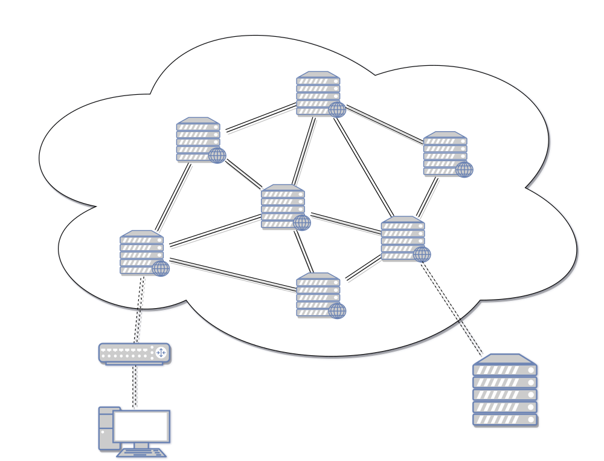
Topologies de Routage
Unicast
Broadcast
Anycast
Multicast
Routage Unicast
Depuis 1 hôte vers 1 autre hôte: "Point à point"
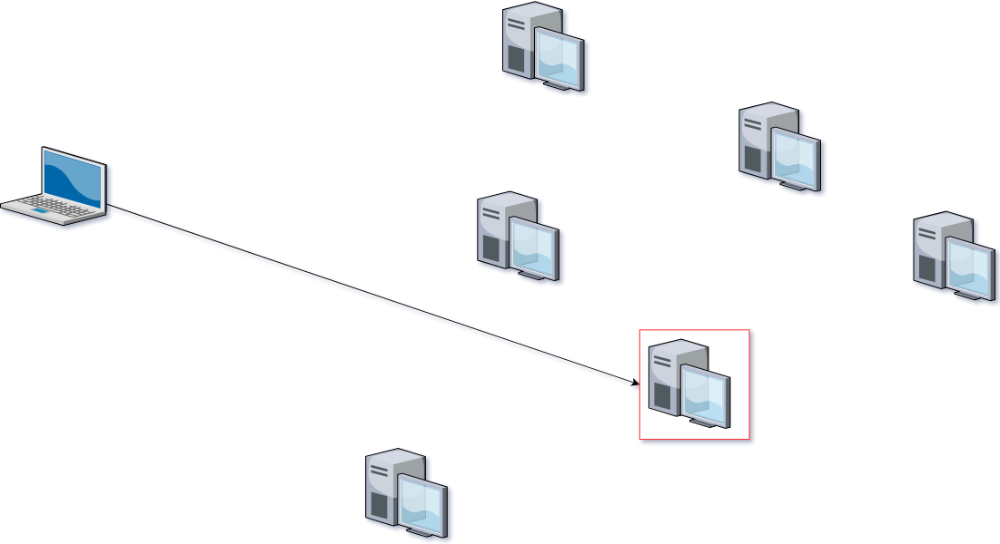
Routage Broadcast
Depuis 1 hôte vers tous les hôtes du réseau local
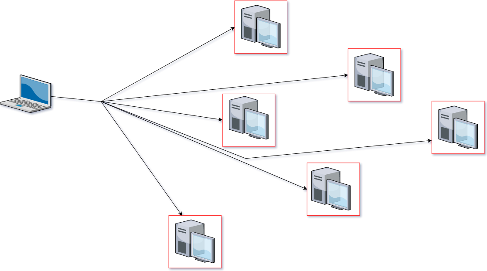
Routage Anycast
Depuis 1 hôte vers les hôtes les plus "proches" en multi-chemin
Routage Multicast
Depuis 1 hôte vers les hôtes "abonnés"
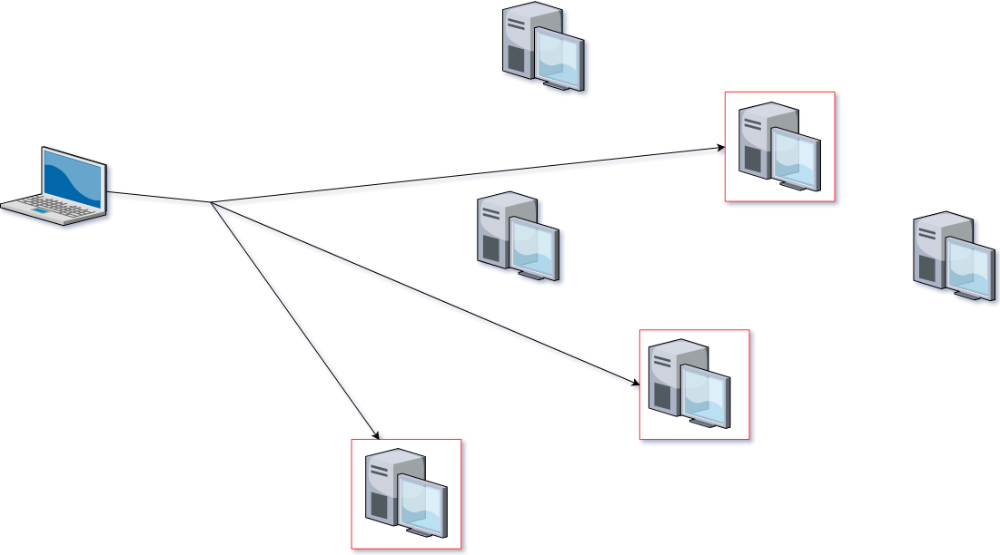
Routage Local
Je suis
192.168.2.4Je veux envoyer un message à
192.168.2.7(unicast)Mon réseau est
192.168.2.0/24
Nous sommes dans le même réseau (à vérifier pour le sport)
Le switch connaîtra l’adresse MAC: communication facile
Mais… et l’abstraction ?
On la respecte !
Mais il faut bien donner un destinataire à la couche "Liaison de Données".
En l’occurence: une adresse MAC.
Rappel : Transmission de données en TCP/IP
ARP
A.R.P. = "Address Resolution Protocol"
Lien entre les couches 2 (Liaison) et 3 (IP)
Protocole "question / réponse":
On demande une adresse IP
On obtient une (ou plusieurs) adresses MAC
On peut "forger" les messages !
Requête ARP
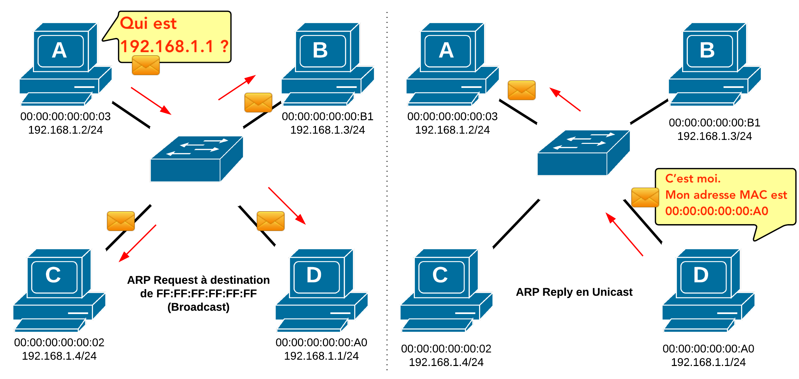
Table ARP
On peut donc "conserver" ces paires d’adresses IP/MAC
But : meilleure performances de communication
"Mise en cache" : notion de durée de vie
Une table ARP par hôte du réseau local
Ping
"Ping" est une question, qui attends une réponse "Pong"
Commande permettant de tester l’accessibilité d’une machine via la couche "réseau"
Utilises le protocole "ICMP" (Internet Control Message Protocol)
Encapsulation dans le protocol IP
Exercices avec ping
Exercices avec ARP
$ sudo su - # Devenir root
root$ arp -a # Afficher la table ARP (Linux et Windows)
root$ arp -d <IP> # Supprimer l'entrée correspondant à <IP>
root$ arp -a
root$ ping -c3 <IP voisin>
root$ arp -a # Quelle différence ?Routage "Global"
Je suis
192.168.2.4Je veux envoyer un message à
72.54.67.128(unicast)Mon réseau est
192.168.2.0/24
Nous sommes dans des réseaux différents
Problème: comment faire ?
Passerelle
Adresse du réseau local
Concept logique
Destination des requêtes extra-réseau
"Porte de sortie" du réseau
Routeur
Hôte appartenant à 2 (ou plus) réseaux
C’est la machine qui fait "passerelle"
Il faut un retour aux requêtes émises:
Entrée / sortie d’un réseau
Exemple de réseaux avec un routeur
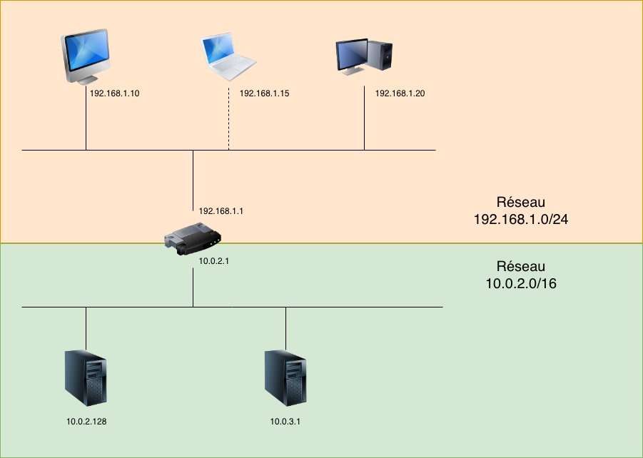
Et Caetera
Le routeur étant lui-même un noeud du réseau "parent"
Soit le destinataire est dans son réseau parent
Soit il transmet à la passerelle du réseau parent
Et Caetera…
Droit de réponse
On a pu faire l’aller. Mais quid de la requête retour?
Exemple de
pingqui attend sonpong…
Table de routage
Table stockée sur chaque hôte (routeur inclus)
Liste les passerelles connues sur lesquelles envoyer les requêtes
Ne contient QUE les réseaux de l’hôte
En fonction des adresses IP des destinataires
Contient toujours une route par défaut
Règles de remplissage de la table de routage
Remplir en 3 temps:
Une entrée par réseau d’appartenance
Une entrée par défaut
Une entrée "statique" par réseau à connaître
Les passerelles indiquées dans une table de routage appartiennent toujours à l’un des réseaux auxquels j’appartiens
Toujours une règle par défaut
Exemple de Table de routage
Reprenons notre double réseau :
Table de Routage pour une machine
Pour une machine "simple", c’est facile. Prenons 192.168.1.10 :
| Réseau à joindre | Passerelle |
|---|---|
192.168.1.0/24 | 192.168.1.10 |
0.0.0.0/0 | 192.168.1.1 |
Une entrée pour le réseau auquel on appartient
Une entrée par défaut
Rappel
Reprenons notre double réseau :
Table de Routage pour le Routeur
Pour le routeur, c’est presque aussi facile :
| Réseau à joindre | Passerelle |
|---|---|
192.168.1.0/24 | 192.168.1.1 |
10.0.2.0/16 | 10.0.2.1 |
0.0.0.0/0 | 127.0.0.1 |
Une entrée pour chaque réseau auquel on appartient
Une entrée par défaut
On suppose ici que le routeur est autonome
Exercice avec la table de routage 1/3
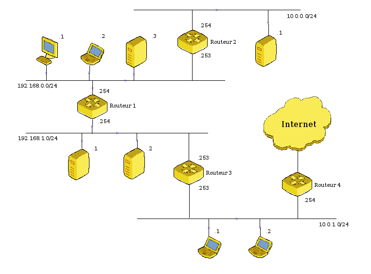
Exercice avec la table de routage 2/3
Quel est la table de routage de 192.168.0.1 ?
Exercice avec la table de routage 3/3
Quel est la table de routage de "Routeur 1" ?
Pratiquons avec la table de routage
sudo su - # Become root
netstat -rn # Show TablesNAT
NAT = "Network Adress Translation"
1 IP privée == 1 IP publique
NAT en image

Exercices: "pont" Wifi
But: Etablir un pont Ethernet <→ Wifi
On a un réseau arrivant en Ethernet (accès en SSH aux pis)
On veut aussi brancher nos smartphones en Wifi
A raison d’un Wifi par Pi, sur le même réseau
Exercices: "pont" Wifi
Installer les paquets nécessaires (
hostapd bridge-utils)Arrêter les services utilisés
sudo su -
apt-get update
apt-get install hostapd bridge-utils
systemctl stop hostapdExercices: "pont" Wifi
Configurer manuellement les interfaces (
/etc/dhcpcd.conf)
# Editeur de texte en ligne : nano
nano /tmp/fichier.txt
# Entrainez vous puis valider avec
cat /tmp/fichier.txt
# Maintenant, le vrai fichier
cp /etc/dhcpcd.conf /etc/dhcpcd.conf.backup
nano /etc/dhcpcd.conf
# Ajouter "denyinterfaces wlan0" et "denyinterfaces eth0"
cat /etc/dhcpcd.conf
# En cas de problème:
cp /etc/dhcpcd.conf.backup /etc/dhcpcd.confExercices: "pont" Wifi
Configurer le point d’accès wifi
echo 'DAEMON_CONF="/etc/hostapd/hostapd.conf"' >> /etc/default/hostapd
cp /etc/hostapd/hostapd.conf /etc/hostapd/hostapd.conf.backup
nano /etc/hostapd/hostapd.confinterface=wlan0
bridge=br0
ssid=ISL
hw_mode=g
channel=7
wmm_enabled=0
macaddr_acl=0
auth_algs=1
ignore_broadcast_ssid=0
wpa=2
wpa_passphrase=ISL2018!
wpa_key_mgmt=WPA-PSK
wpa_pairwise=TKIP
rsn_pairwise=CCMPExercices: "pont" Wifi
Configurer le "pont" (aka. bridge)
brctl addbr br0 # Creation de l'interface réseau
brctl addif br0 eth0 # Mixage des interfaces
# Définition de la configuration de br0
nano /etc/network/interfaces.d/br0auto br0
iface br0 inet manual
bridge_ports eth0 wlan0Exercices: "pont" Wifi
Tout réactiver :
systemctl enable hostapd
reboot
...
systemctl status hostapdTester tout ça
Exercises: Routeur Wifi
Comme pour le bridge, mais avec du routage dans un réseau privé
Il faut configurer un serveur DHCP:
dnsmasq
Exercises: Routeur Wifi
Désactiver ce qu’on vient de faire:
systemctl disable hostapd
rm -f /etc/hostapd/*.conf /etc/network/interfaces.d/br0
reboot
...
systemctl status hostapd
brctl delbr br0
ip addrExercises: Routeur Wifi
Configurer une IP statique publique :
# Décider du plan d'adressage et adapter ci-dessous
nano /etc/dhcpcd.confinterface wlan0
static ip_address=192.168.4.1/24
nohook wpa_supplicantExercises: Routeur Wifi
Installer dnsmasq avec
apt-getConfigurer
dnsmasq:
systemctl stop dnsmasq
cp /etc/dnsmasq.conf /etc/dnsmasq.conf.backup
nano /etc/dnsmasq.confinterface=wlan0 # Use the require wireless interface - usually wlan0
dhcp-range=192.168.4.2,192.168.4.20,255.255.255.0,24hExercises: Routeur Wifi
Configurer hostapd comme précédemment (sauf la ligne "bridge"):
systemctl disable hostapd
nano /etc/hostapd/hostapd.confinterface=wlan0
driver=nl80211
ssid=ISL
hw_mode=g
channel=7
wmm_enabled=0
macaddr_acl=0
auth_algs=1
ignore_broadcast_ssid=0
wpa=2
wpa_passphrase=ISL2019?
wpa_key_mgmt=WPA-PSK
wpa_pairwise=TKIP
rsn_pairwise=CCMPExercises: Routeur Wifi
Vérifier les changements
systemctl restart dhcpcd
systemctl start hostapd
systemctl enable hostapd
systemctl start dnsmasq
systemctl enable dnsmasqExercises: Routeur Wifi
Il manque le routage !
echo 'net.ipv4.ip_forward=1' >> /etc/sysctl.conf
sysctl -p
# Masquerade
iptables -t nat -A POSTROUTING -o eth0 -j MASQUERADE
sh -c "iptables-save > /etc/iptables.ipv4.nat"
nano /etc/rc.local...
iptables-restore < /etc/iptables.ipv4.nat
exit 0Couche "Transport"
Modèle "Internet Protocol"
Où sommes nous ?
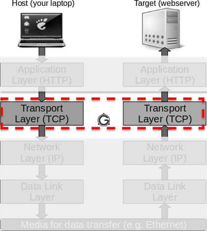
Buts de la couche "Transport"
Garantie des niveaux de service de la communication
Gestion du niveau d’intégrité des données transmises
Encore une adresse !
Problème :
On sait dialoguer entre machines
Une machine possède plusieurs applications
Comment faire le lien entre X application et 1 machine ?
Il faut une adresse par application
Port
Idée : on associe 1 nombre entier par application
C’est ce qu’on appelle le "port"
On peut donc "multiplexer" pour une même adresse IP
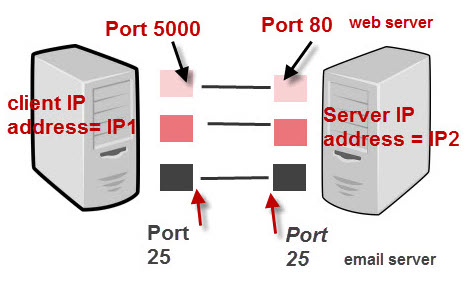
Socket
"Adresse" de la couche Transport
"Tube" dans lequel lire et écrire
Couple Adresse IP + Port
Ou un fichier ("Socket Unix" / "Named Pipe" dans Windows)
Problèmes de la couche Réseau
Le rôle de la couche réseau est de "router" de la donnée d’un hôte à un autre.
Et c’est tout !
Pas sûr que les paquets arrivent (Ping ? ICMP!)
Pas de contrôle d’intégrité
Pas de garantie d’ordre d’arrivée
Protocoles de Transport
Il faut des protocoles de communication au dessus de IP
On est dans une couche virtuelle: tout est possible!
Protocoles étudiés:
TCP
UDP
Protocoles "mentionnés"
TCP
TCP = "Transmission Control Protocol"
Unité de donnée : "paquets TCP"
Se base sur IP pour la couche réseau
Caractéristisques de TCP
Mode "connecté" entre 2 ports… de 2 hôtes différents
Garantie un bon acheminement des données
Mémorisation des données
Indépendant vis-à-vis des données transportées (comme IP)
"Communication bi-directionnelle" (full duplex) : échange dans les 2 sens en même temps
TCP dans tous ses "états"
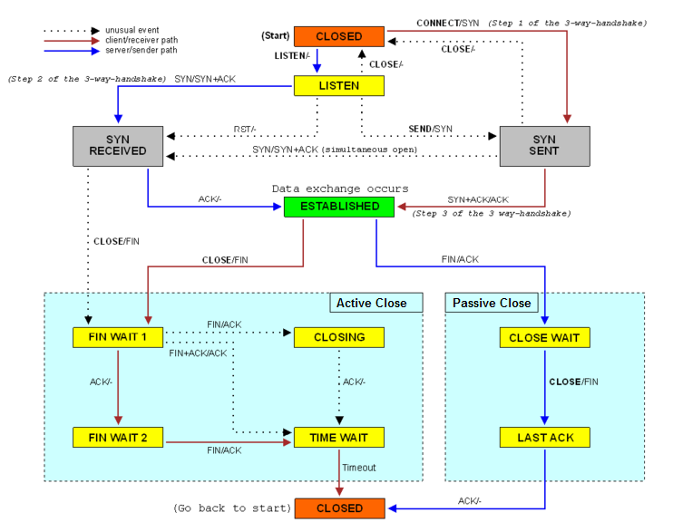
TCP : Protocole et poignées de mains
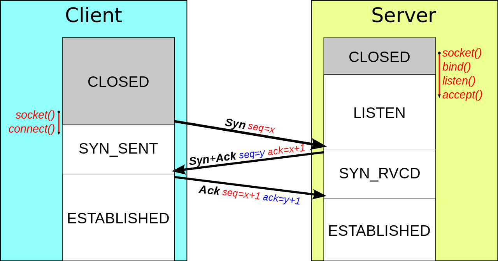
Limites de TCP
Complexe
"Couteux" en temps
Délai d’établissement d’une connexion
Nombre d’aller-retours sur le réseau
UDP
UDP = "User Datagram Protocol"
Unité de donnée: "datagramme UDP" (comme IP)
Se base sur IP pour la couche réseau
Caractéristisques de UDP
Concept : "Fire and Forget"
Pas de mode connecté: Simple
Pas de garantie d’arrivée de la donnée
Intégrité de la donnée garantie
SI la donnée arrive
Cas d’usages:
Performances
Petite quantité de données
Pratique : voir les Ports
$ sudo netstat -anpt
...
$ sudo netstat -anpt
...
$ sudo netstat -anpu
...
$ sudo netstat -anptu4
...PAT / NAT
Vous vous souvenez du NAT?
Problème : On voudrait 1 IP publiques pour X IP privées
Solution : utiliser le port
PAT = "Port Adresse Translation"
Egalement connu comme "NAT Dynamique"
NAT/PAT en images 1/2

NAT/PAT en images 2/2
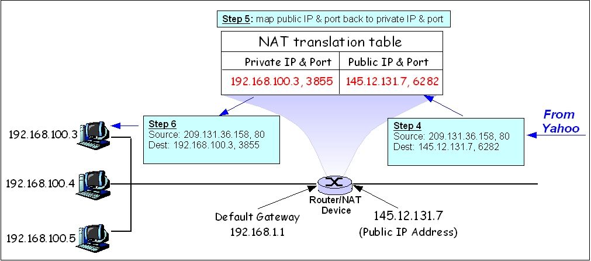
Couche "Application"
Modèle "Internet Protocol"
Où sommes nous ?
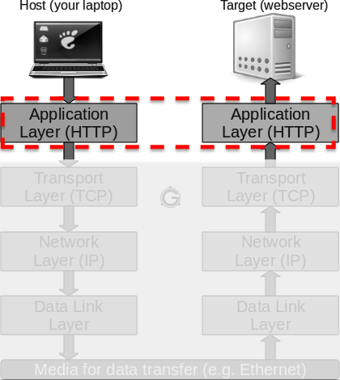
Buts de la couche "Application"
C’est ici que se passe votre travail
Communications de haut niveau entre des processus distants
Plein de protocoles connus se trouvent ici: HTTP, SSH, FTP, P2P, etc.
URL : Encore une adresse !
U.R.L. : "Uniform Resource Locator"
C’est l’adresse au niveau des applications
Permet d’identifier de manière unique une ressource sur le réseau World Wide Web
Structure des URLs
| Protocole | Auth. | Hostname | Port | Chemin |
|---|---|---|---|---|
Obligatoire (souvent masqué, suivi de "://") | Facultatif (défaut : "") | Obligatoire | Facultatif (défaut : associé au protocole) | Facultatif (défaut : "/") |
http:// | user:pass@ | domain.com | :80 | /admin |
https:// | "" | google.com | "" (:443) | "" (/) |
Exemple d’URLs
github.com:443/dduportal
ssh://gitserver:3000/public/project1.git
Client / Serveur
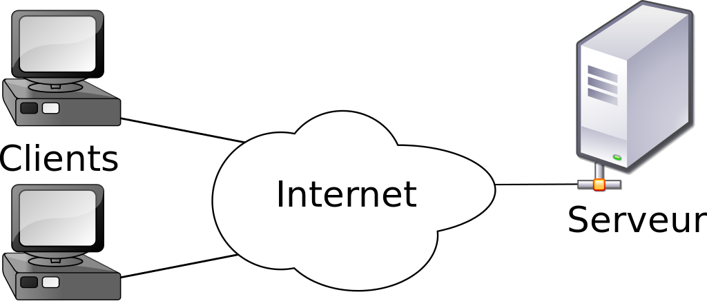
Serveur
Ecoute sur un socket ("passif")
Réponds aux requêtes ("actif")
Emets les réponses
Client
Ecrit sur un socket
Emets des requêtes
Reçois les réponses
DNS
Protocole applicatif de résolution de nom
Utilise UDP comme protocole, port 53
But: transcrire un nom de domaine en adresse IP
Exemple:
google.com<→172.217.17.142
Enregistrements DNS
Plusieurs types :
Type
NS: Délégation à un autre serveur DNSType
A: 1 nom de domaine == 1 adresse IPv4Type
AAAA: 1 nom de domaine == 1 adresse IPv6Type
CNAME: 1 nom de domaine == 1 autre nom de domaineType
MX: 1 nom de domaine pour un domain de mailType
TXT: 1 champ libre
DNS : hiérarchie
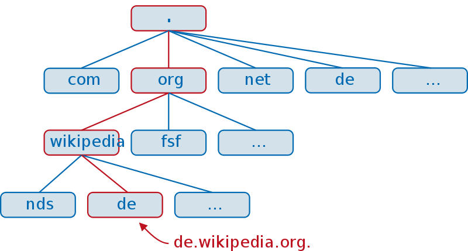
FQDN
FQDN : Fully qualified domain name
Nom complet
Jusqu’au domaine de premier niveau ("TLD")
Avec un point final
Exercices avec DNS
dig www.google.com
dig @1.1.1.1 www.google.com
dig dduportal.github.com
dig CNAME dduportal.github.com
dig github.github.io.
dig NS dduportal.github.comHTTP
HTTP : "Hyper Text Transfert Protocol"
HTTPS : "HTTP + SSL/TLS"
Protocole client / serveur
Clients : Navigateur web, commandes
wgetoucurl
Utilise TCP pour le transport, sur le port 80
HTTPS utilisera le port 443
Versioné: 1.0, 1.1, 2.0, etc.
Requête HTTP
Chaque requête spécifie une "méthode", appliquée sur une ressource distante
URL
La méthode va appliquer une action sur la page distante
Exemple :
GET / HTTP/1.1
Host: www.isl.beRéponse HTTP
Le serveur HTTP renvoie un code retour
Nombre entier décimal à trois chiffres
Et éventuellement du contenu
Le contenu de la requête distante
Méthodes HTTP
GET : demande la représentation de la ressource distante
HEAD : demande d’informations sur la ressource distante
PUT : demande de mise à jour d’une ressource distante
POST : création de ressource (ou mise à jour !)
DELETE : suppression de la ressource distante
Et bien d’autres : https://developer.mozilla.org/fr/docs/Web/HTTP/M%C3%A9thode
Codes Réponses HTTP
1xx: Information2xx: Succès200, 204…
3xx: Redirections301, 302…
4xx: Erreur du client HTTP404, 418…
5xx: Erreur du serveur HTTP500, 502, 503…
Headers HTTP
Un "En-tête" (=="header") est un couple clef / valeur
Une requête ou une réponse HTTP possède une collection de headers qui lui sont propres
Permet d’exprimer les "méta-donnée" de la requête (ou réponse)
Exemples :
HostLocationUser-Agent
Exercices avec une machine virtuelle
VirtualBox ou VMWare ?
Si vous êtes chez vous : VirtualBox (gratuit, libre, complet, multi-plateforme)
A l’école ou si VirtualBox ne fonctionne pas : VMWare Player (gratuit, propriétaire, Windows seulement)
VirtualBox
Pour VMWare Player: Cliquez ici
Obtenir l’image VirtualBox
Téléchargez l’image
Debian.ovasur votre bureau : https://www.dropbox.com/s/d2hlxar8skcy44g/Debian.ova?dl=0Ouvrez VirtualBox
Séléctionner le bouton "Importer" et choisissez le fichier
Debian.ova
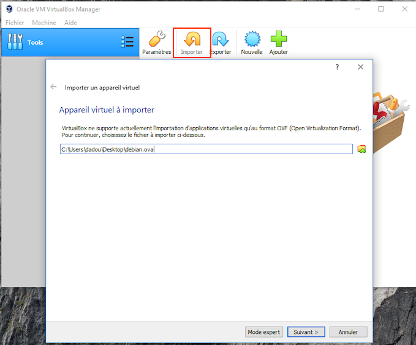
Créer la VM dans VirtualBox
Laissez les réglages par défaut :
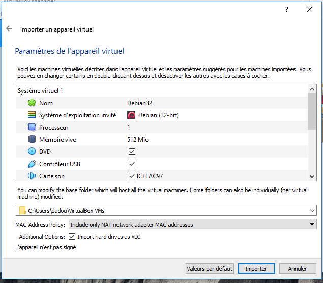
Démarrez la VM dans VirtualBox
Sélectionner la machine "Debian32" nouvellement créée dans la colonne de gauche
Cliquez sur le bouton "Start" avec la flèche verte pour démarrer la VM
Sautez la section "VMare Player" et accédez à la suite en cliquant ici
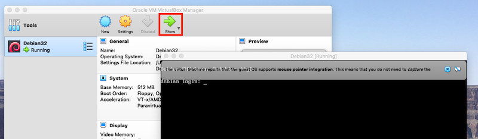
VMWare Player
Pour VirtualBox : Cliquez ici
Obtenir l’image pour VMWare Player
Téléchargez l’archive
Debian.zipsur votre bureau : https://www.dropbox.com/s/ncsz0bmpgdzfdjn/Debian.zip?dl=0Décompressez l’image pour obtenir un dossier nommé
Debiansur le bureau
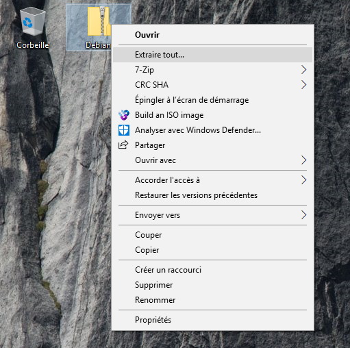
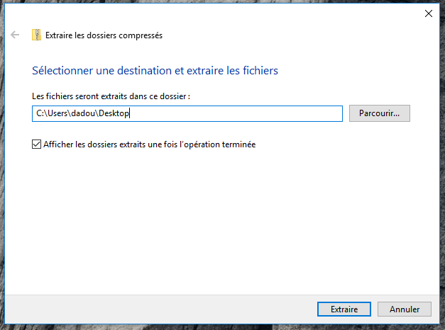
Créer la VM dans VMWare Player 1/2
Ouvrir VMWare Player
Sélectionner le menu "Player" → "File" → "Open…"
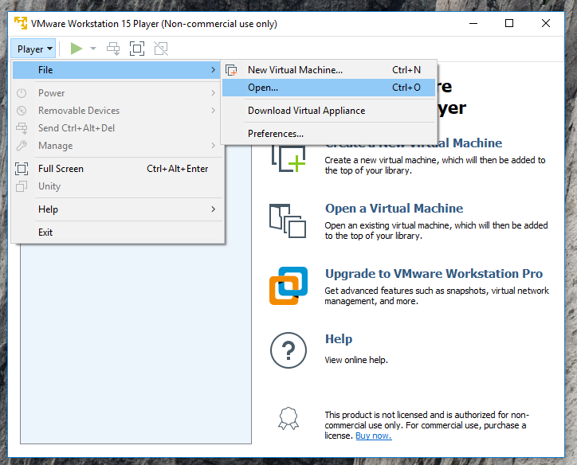
Créer la VM dans VMWare Player 2/2
Sélectionner le fichier
debian.vmxqui se trouve dans le dossierDebianUne fois la VM "Debian" créée, cliquer sur le bouton "Play" :
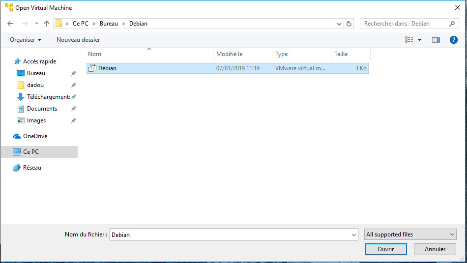
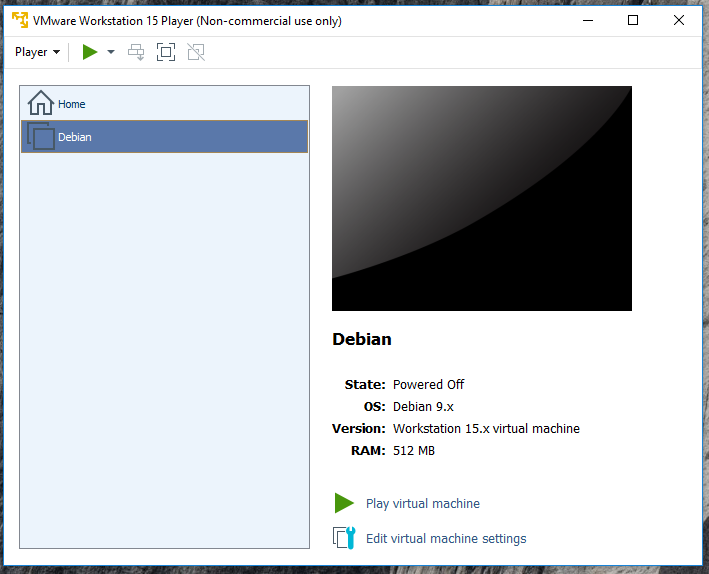
Démarrage de la VM dans VMWare Player
Si le message "Cannot connect the virtual device …" apparaît, choisissez le bouton "No"
Au bout de quelques secondes apparais l’invitation de connexion
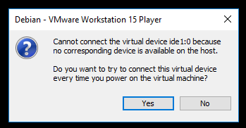
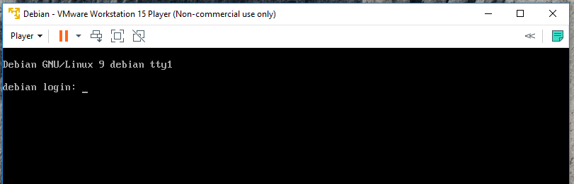
S’authentifier sur la VM
Identifiez-vous :
Utilisateur :
islMot de passe :
isl2018(aucun caractère n’est affiché quand vous tapez le mot de passe)
Exercices Ligne de commande Linux 1/2
Dans quel dossier vous trouvez-vous ?
Quel est le contenu de ce dossier (fichiers cachés inclus) ?
Quel est le contenu du dossier
/etc(fichiers cachés inclus) ?Créer un dossier nommé
ISL(majuscules) dans le "home" de l’utilisateurislDéplacez-vous dans ce dossier
Créez-y un fichier
notes.txt?Quel est le chemin absolu de ce fichier ?
Exercices Ligne de commande Linux 2/2
Retournez dans le "home" utilisateur de
islQuel est le chemin relatif du fichier
notes.txt?Qui est le propriétaire du fichier
notes.txt?Quels sont les droits du fichier
notes.txt?
Qui est le propriétaire du fichier
/bin/ls?Afficher la liste des processus ( Indice :
ps aux)Quel est le PID du processus
sshd(Indice :… | grep 'sshd') ?
Installer des paquets
Terminez la session de l’utilisateur
islavec la commandelogoutpuis identifiez-vous en tant querootOU utilisez la commande
sudo su -
Est-ce que la commande
arpexiste (Indice :which ls) ?Mettez à jour le catalogue de "paquets"
apt-get update
Installer le paquet nommé
net-toolsapt-get install net-tools
Commande
arp?
Exercice Couche Réseau
Trouvez les informations suivantes :
Combien d’interfaces réseau ? (Indice :
ip addr)Quelles sont les adresse IP de ces interfaces ? (Indice :
ip addr)Addrsse Ip de la passerelle par défaut du réseau ? (Indice :
ip route)
Essayez de "pinguer" 3 fois l’adresse IP de la passerelle
Exercice Couche Liaison de Données
Afficher la table ARP (Indice :
arp)Supprimez toutes les entrées (Indice :
arp --help)Pourquoi est-ce qu’une des entrées ré-apparait après quelques secondes ?
Essayez de pinguer une adresse inexistante du réseau local
Quel est la conséquence dans la table ARP ?
Exercice Couche Transport 1/2
Quelle sont les "sockets" TCP (IPv4) en état
LISTEN?Indice :
netstat
Quelles sont les interfaces réseaux associées ?
Indice : utiliser la/les adresse IP associées aux ports
Quels sont les applications associées ?
Indice : Registre de ports IANA
Exercice Couche Transport 2/2
Un peu de NAT : configurez une redirection de port pour SSH
Choisissez le port 2222 sur votre hôte, et le port 22 pour la VM
VirtualBox : Réglages de la VM → Réseau → dépliez le menu "Avancé" → "Redirection de ports"
VMWare Player :
Confirmez la redirection de ports en vous connectant avec Putty (ou SSH sur Mac/Linux)
Exercices Couche Application
Exercices avec DNS
Donnez une adresse IPv4 d’un serveur derrière le domaine
www.google.com(Indice :dig)Même question mais en interogeant le serveur DNS
1.1.1.1Pourquoi est-ce que les adresses IPs sont différentes ?
Quel est l’alias du domaine
dduportal.github.com(Indice : "CNAME") ?Donnez une adresse IP d’un serveur DNS d’authorité du domaine
dduportal.github.com(Indice : "NS") ?
Exercices avec HTTP 1/3
Affichez la page web à l’adresse
http://google.com/Quel est le résultat ? Pourquoi ?
Affichez les en-têtes de la requête précédente (et de sa réponse associée)
Comment fonctionne la redirection ?
Confirmez votre hypothèse avec un navigateur et son "inspecteur web"
Exercices avec HTTP 2/3
Installez le serveur web "Nginx" (nom du paquet :
nginx)Trouvez tous les ports TCP sur lesquels Nginx écoute
Essayer d’afficher la page web de défaut en utilisant 2 adresses IP différentes
Arrêtez le service et vérifier qu’il ne réponds plus aux requêtes HTTP (Indice: Commandes
systemctl nginx stop/systemctl nginx status)Vérifiez avec
netstatet l’option-p(Indice :ps aux | …)Redémarrer le service (Indice:
systemctl nginx restart)
Exercices avec HTTP 3/3
Essayez d’installer le paquet
apache2Que se passe t’il ?
Bibliographie
Bibliographie FR
[OpenClassrooms] Les réseau de zéro
[Comment ça marche] TCP/IP
[Wikibooks] : Adressage IP v4
[Developpez.com] : Cours d’introduction à TCP/IP
Bibliographie EN
Wikipedia EN :
[xahlee.info] TCP/IP Tutorial
[Electronic Design] What’s The Difference Between The OSI Seven-Layer Network Model And TCP/IP
Bibliographie "Pratique"
[Jeu Linux en ligne pour les commandes] Terminus (Merci Guillaume!)
[RaspberryPi.org] Creating an access point
[Linux Commandes (Fiche mémoire)] http://juliend.github.io/linux-cheatsheet/
[Reddit] Linux Commande Overview
La référence ABSOLUE en livre : Computer Networks by Andrew S. Tanenbaum